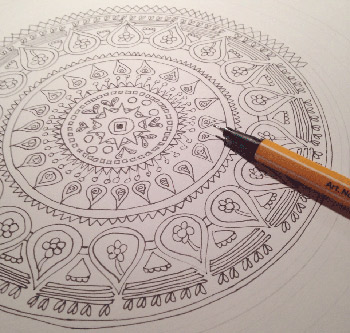

Los Mandalas
Los mandalas cada día se hacen más conocidos
¿Qué son y qué significan sus formas y colores? El mandala tiene su origen en India y su nombre en sánscrito significa “círculo o rueda”.
llaman la atención de personas de todas las edades. Lo que no todos saben es que éstos tienen una interpretación según su forma y color, pasando a ser poderosos aliados en meditación como en sanación.
Referencias
El mandala
tiene su origen en India y su nombre en sánscrito significa “círculo o rueda”, pasando a representar su característica básica, aunque pueden ser de diferentes formas incorporando todas las figuras geométricas.
Para los Budistas, su función es la meditación. No obstante, el proceso más importante para ellos es la “creación” de éstos por ser un camino “recorrido” que muestra las vivencias del momento de quien lo diseña y siendo la vía de conexión entre el hombre y la divinidad, tanto en el proceso de creación, al tenerlo para observación o como adorno.
“Desde el punto de vista espiritual es un centro energético de equilibrio y purificación que ayuda a transformar el entorno y la mente de quien medita en ellos”, explica el experto Claudio María Domínguez.
Formas y su significado:
Dibujar o pintar mandalas es una terapia que se está usando cada día más. Su diseño es libre y su significado dependerá de sus formas y colores. Para quienes se animen a trabajar con ellos acá detallaremos sus significados:
| Formas y significados | |||||
|---|---|---|---|---|---|
| Círculo | lejanía pero también seguridad, lo absoluto y el verdadero “yo”. | Cuadrado | equilibrio y estabilidad. | Hexágono | equilibrio y unión de los contrarios. |
| Triángulo | relacionado con el agua, la transformación y vitalidad. | Espiral | energías curativas | Hexágono | equilibrio y unión de los contrarios. |
| Cruz | símbolo de decisiones y se relaciona con los puntos cardinales. | Corazón | la unión, el amor, la felicidad. | Mariposa | relacionada con la transformación, muerte y la auto renovación del alma. |
| La estrella | relacionada con la libertad y espiritualidad. | Pentágono | representa los símbolos de la tierra, agua y fuego, así como la forma del cuerpo humano. | Laberinto | confusión, autorreflexión y la búsqueda del centro de uno mismo. |

Colores y sus significados
Negro:
relacionado con la tristeza, la muerte, lo profundo, la ignorancia y el misterio.
purificación, iluminación. Es el color de la perfección. De la nada o el todo por hacer.
relacionado con la naturaleza, esperanza, crecimiento, felicidad y libertad.
paz, alegría, serenidad y satisfacción.
calma, espera, neutralidad, sabiduría y renovación.
energía pura vital, pasión y sensualidad.
energía, dinamismo, ternura, valor y ambición.
simpatía, color del sol y la luz.
altruismo, dulzura, paciencia.
contemplación, amor al prójimo. Idealismo y sabiduría.
transformación, magia, espiritualidad e inspiración.
capacidades psíquicas, emociones fluctuantes.
sabiduría y lucidez.